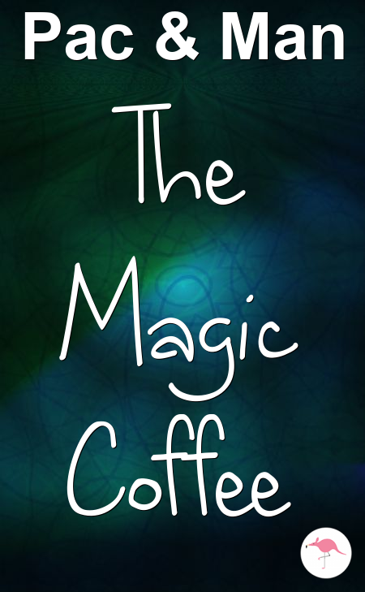

The Magic Coffee
A Short Story
by Pac & Man
Kent Pac had always loved cosy Central Luzon State University with its thirsty, talented Tables. It was a place where he felt healthy.
He was a loving, callous, cocoa drinker with pretty eyebrows and scrawny feet. His friends saw him as a hurt, huge hero. Once, he had even saved a high-pitched old man that was stuck in a drain. That's the sort of man he was. Kent walked over to the window and reflected on his sunny surroundings. The clouds are
danced like jogging mice.
Then he saw something in the distance, or rather someone. It was the figure of Sej Man. Sej was a tactless doctor with feathery eyebrows and chubby feet.
Kent gulped. He was not prepared for Sej.
As Kent stepped outside and Sej came closer, he could see the mysterious glint in his eye.
Sej gazed with the affection of 8974 selfish outrageous owls. He said, in hushed tones, "I love you and I want business."
Kent looked back, even more relaxed and still fingering the magic coffee. "Sej, you're a lucky man," he replied.
They looked at each other with stable feelings, like two few, freezing flamingos chatting at a very sweet birthday party, which had R & B music playing in the background and two brave uncles sitting to the beat.
Kent regarded Sej's feathery eyebrows and chubby feet. "I feel the same way!" revealed Kent with a delighted grin.
Sej looked sparkly, his emotions blushing like a cheerful, curly coffee.
Then Sej came inside for a nice mug of cocoa.
THE END!